3D
When editing a 3D scene, you view the scene in the 3D view. You can change the projection of the view by switching between perspective camera and orthographic camera modes. When using the perspective camera mode, components that are far from the camera appear smaller than those nearby. In the orthographic camera mode, all components appear at the same scale irrespective of their distance from the camera. Both of them are free-form camera modes that you can use to orbit around the scene.
When you import 3D scenes from files that you exported from 3D graphics tools, you also import a scene camera, light, model, and materials. If your scene did not contain them, you can add the corresponding Qt Quick 3D components from Components >  > Qt Quick 3D > Qt Quick 3D.
> Qt Quick 3D > Qt Quick 3D.
You can use the toolbar buttons to transform 3D components and manipulate the 3D scene. Transformation refers to moving, rotating, or scaling of a component. The pivot of the component is used as the origin for transformations. You can set a local pivot offset for a component in Properties to transform the component around a point other than its local origin. A line is drawn in the 3D view from the pivot point to the center of the component to provide a visual connection between them. Especially when working with complex scenes, it may be useful to use the showing and hiding or the locking features in Navigator to avoid transforming components by mistake while editing your scene.
Toggle between local and global orientation to determine whether the gizmos affect only the local transformations of the component or whether they transform with respect to the global space.
Another helpful feature when editing 3D scenes is the edit light, which is a quick way to light the scene.
Additionally, you can toggle the visibility of the grid, selection boxes, icon gizmos, and camera frustums in the 3D scene.
There is a context menu in the 3D view. To open it, right-click in the 3D view. From the context menu you can:
- Create cameras, lights, and models.
- Open Material Editor and edit materials.
- Delete components
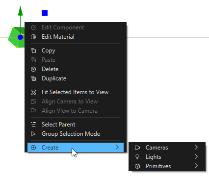
To refresh the contents of the 3D view, press P or select the (Reset View) button.
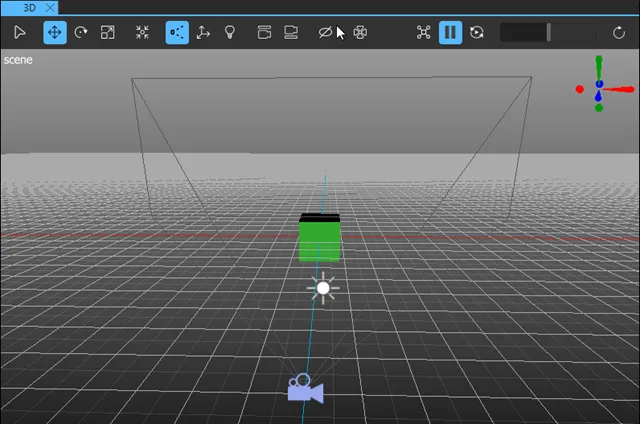
The following video illustrates navigating in the 3D view and using the toolbar:
Controlling the 3D View Camera
To switch to perspective camera mode, select (Toggle Perspective/Orthographic Edit Camera). To switch to orthographic camera mode, select . You can also Toggle the camera mode by using the keyboard shortcut T.
You can navigate the scene by panning, rotating, and zooming the 3D view camera:
- To pan, press Alt (or Option on macOS) and use the middle mouse button to click and drag anywhere in the rendered view to slide the view around.
Note: It is not possible to pan using Magic Mouse.
- To orbit, press Alt and click and drag anywhere in the rendered view to rotate the view.
- To zoom, use the mouse wheel or press Alt and right-click anywhere in the rendered view to zoom the view in or out as you drag up or down.
To zoom and focus the 3D view camera on a selected component, select (Fit Selected) or press F.
The world axis helper (1) shows the direction of the world axes in the view. To point the camera at the currently selected component in the direction of an axis, click the axis. Clicking the dot at the end of the axis will point the camera at the opposite direction of the axis. If no component is selected, the camera is pointed at the world origin. This does not affect the camera zoom level.
To view the scene in a split view of four different point of views, select .
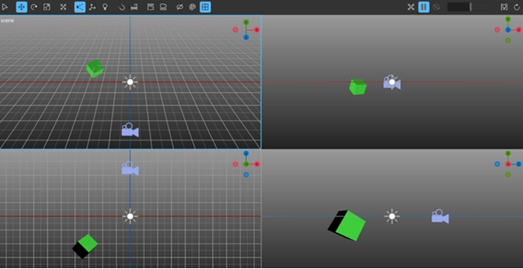
To select one of the four panes, click on it. The selected pane is marked with a blue frame. Use the world axis helper to change the point of view for each pane independently. Navigate each split by panning, rotating, and zooming, as described above.
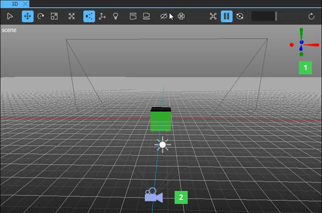
You can use scene cameras (2) to view the View3D component from a specific angle in the 2D view while editing scenes. Different types of cameras are available in Components > Qt Quick 3D > Qt Quick 3D. For more information about using cameras in the scene, the available camera types, and their properties, see Cameras.
Using Global and Local Orientation
To switch between local and global orientation, select (Toggle Local/Global Orientation) or press Y.
In global orientation mode, transformation of a selected component is presented with respect to the global space. For example, while the move tool is selected, selecting a cube will show its move gizmo aligned with the axes of global space. Dragging on the red arrow of the gizmo moves the component in the global x direction.
In local orientation mode, the position of a selected component is shown according to local axes specific to the selected component. For example, selecting a rotated cube will show its axes rotated, and not aligned with the axes of global space. Dragging on the red arrow of the gizmo moves the component in the local x direction in relation to the component.
Using Edit Light
The edit light is an extra point light that can be used to illuminate the scene. To toggle the edit light on and off, select 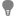 or 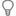 (Toggle Edit Light) or press U.
For more information about the available scene light types and their properties, see Lights.
Baking Lights
Bake lights to light static elements in your scene. To bake lights, select  to open the Lights Baking Setup dialog. For more information, see Baking Lightmaps.
to open the Lights Baking Setup dialog. For more information, see Baking Lightmaps.
Selecting Components
To move, rotate, or scale components in the scene, you need to select them first. The selection mode buttons determine how components are selected when you click them in the 3D view:
- In the 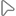 (Single Selection) mode, a single component is selected.
- In the 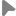 (Group Selection) mode, the top level parent of the component is selected. This enables you to move, rotate, or scale a group of components.
To toggle the selection mode, press Q.
To multiselect, hold Ctrl and click the components you wish to select.
After selecting a component, you can apply the usual keyboard shortcuts applicable to your operating system, for example, Ctrl+C and Ctrl+V on Windows to copy-paste components.
Moving Components
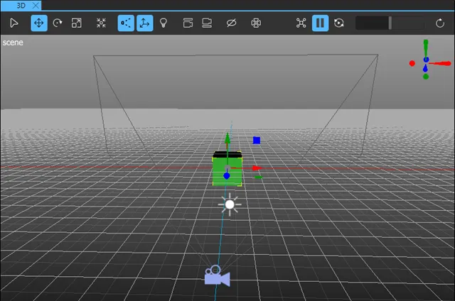
You can move components in relation to their coordinate system, along the x, y, or z axis or on the top, bottom, left, and right clip planes of the the 3D view.
To move components, select or press W:
- To move components along the axes of the move gizmo, click the axis, and drag the component along the axis.
- To move components on a plane, click the plane handle and drag the component on the plane.
- To move components freely in the 3D view, click and drag the gray handle at the center of the move gizmo.
Rotating Components
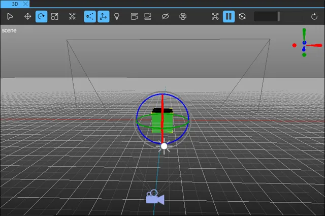
To rotate components, select or press E:
- To rotate a component around its rotation gizmo, click the axis ring and drag in the direction you want to rotate the component in.
- To freely rotate the component, click and drag the inner center circle of the gizmo.
Scaling Components
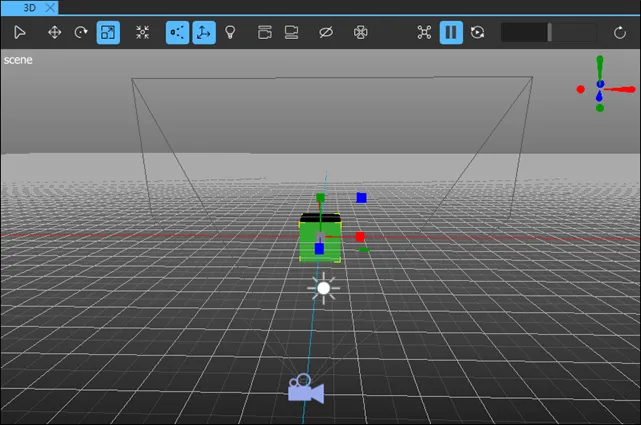
You can use the scale handles to adjust the local x, y, or z scale of a component. You can adjust the scale across one, two, or three axes, depending on the handle.
To scale components, select or press R:
- To adjust the scale across one axis, click and drag the scale handle attached to the axis.
- To adjust the scale across a plane, click the plane handle and drag the component on the plane.
- To uniformly scale a component across all axes, click and drag the gray handle at the center of the component.
Snapping
With snapping turned on, the objects in the 3D view snap to certain intervals during transformation (move, rotate, scale).
You can toggle snapping in the following ways:
- Select in the 3D view toolbar.
- Hold down the Ctrl key.
With snapping turned on, you can press and hold Shift to snap objects to one tenth of the specified snap interval.
Configuring Snapping
To edit the snapping settings, select in the 3D view toolbar to open the configure dialog.
In the configure dialog, you can do the following:
- Turn snapping on and off separately for the different transformations (move, rotate, scale).
- Set snap intervals for the transformations.
Note: Changing the snap interval for the position also changes the grid line intervals.
Note: All the grid lines might not be visible depending on the zoom level in the 3D view.
- Select Absolute Position to snap to absolute values. Clear the checkbox to use relative values.The absolute snapping aligns the object with the grid, while the relative snapping moves the object in fixed intervals without changing its alignment. For example, if you have an object that is slightly off the grid and you want to snap it to the grid, use the absolute snapping. If you want to move the object by a certain distance without affecting its orientation, use the relative snapping.
Aligning Views and Cameras
To align a camera to the 3D view:
- Select a camera in the 3D or Navigator view.
Note: If you don't have a camera selected, the most recently selected camera is aligned to the view.
- In the 3D view, select .
This moves and rotates the camera so that the camera shows the same view as the current view in the 3D view.
To align the 3D view to a camera:
- Select a camera in the 3D view or Navigator.
Note: If you don't have a camera selected, the view is aligned to the most recently selected camera.
- In the 3D view, select .
This copies the position as well as x and y rotation values from the camera and applies them to the 3D view.
Toggling Visibility
To toggle the visibility of objects in the 3D view, select  in the toolbar. This opens a menu with the following options:
in the toolbar. This opens a menu with the following options:
| Show Grid | Toggles the visibility of the helper grid. |
| Show Selection Boxes | Toggles the visibility of selection boxes for selected 3D objects. |
| Show Icon Gizmos | Toggles the visibility of icon gizmos for object such as cameras, lights, and particle systems. |
| Always Show Camera Frustums | Toggles between always showing the camera frustum and showing it only for cameras selected in the 3D view. |
| Always Show Particle Emitters and Attractors | Toggle between always showing the particle emitter and attractor visualizations and only showing them when the emitter or attractor is selected in the 3D view. |
Changing Colors
To change the 3D view background or grid color, select in the toolbar. This opens a menu with the following options:
| Select Background Color | Select a color for the background. |
| Select Grid Color | Select a color for the grid. |
| Use Scene Environment Color | Sets the 3D view to use the scene environment color as background color. |
| Reset Colors | Resets the background and grid colors to the default colors. |
Particle Editor
The particle editor tools help you preview your particle systems in the 3D view. You can select one particle system to preview at a time.
To preview a particle system in the 3D view:
- Select a particle system in the Navigator or 3D view.
- In the 3D view, select to activate particle animation. Now you can see the particle animation in the 3D view.
You can pause the particle animation by selecting 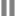 . When the animation is paused, you can use to manually seek forward or backward in the particle animation.
Using Viewport Shading
Use Viewport Shading to change the rendering of the materials to only reflect a particular aspect of the overall rendering process. Use shading also as a debugging tool to understand why a material looks the way it does. In split view, view the scene using different shading properties in each split.
To use the Viewport Shading, right-click the 3D view to open the context menu, select Viewport Shading and then select Wireframe, one of the material properties, or Reset All Viewports.
Select Wireframe to only show the edges of the objects in the scene.
Select one of the material properties available for shading:
| Property | Description |
|---|---|
| Base Color | Shows only the base color of a material passed through without any lighting. |
| Roughness | Shows only the roughness of a material passed through as an unlit greyscale value. |
| Metalness | Shows only the metalness of a material passed through as an unlit greyscale value. |
| Normals | Shows only the interpolated world space normal value of the material mapped to an RGB color. |
| Ambient Occlusion | Shows only the ambient occlusion of the material. |
| Diffuse | Shows only the diffuse contribution of the material after all lighting. |
| Specular | Shows only the specular contribution of the material after all lighting. |
Select Reset All Viewports to reset the shading of the scene in all of the splits.
Summary of the 3D View Toolbar Buttons
The 3D view toolbar contains the following buttons:
| Button | Tooltip | Keyboard Shortcut | Read More |
|---|---|---|---|
| Toggle Group/Single Selection Mode | Q | Selecting Components | |
| Activate the Move Tool | W | Moving Components | |
| Activate Rotate Tool | E | Rotating Components | |
| Activate Scale Tool | R | Scaling Components | |
| Fit Selected Object to View | F | Controlling the 3D View Camera | |
| Toggle Perspective/Orthographic Edit Camera | T | Controlling the 3D View Camera | |
| Toggle Global/Local Orientation | Y | Using Global and Local Orientation | |
| Toggle Edit Light On/Off | U | Using Edit Light | |
| Toggle Snapping During Node Drag | Shift + Tab | Snapping | |
| Open Snap Configuration Dialog | Configuring Snapping | ||
| Align Selected Cameras to View | Aligning Views and Cameras | ||
| Align View to Selected Camera | Aligning Views and Cameras | ||
| Visibility Toggles | Toggling Visibility | |
| Background Color Actions | Changing Colors | ||
| Toggle Split View On/Off | Ctrl + Alt + Q | Using Split View | |
| Seek Particle System Time | Particle Editor | ||
| Toggle Particle Animation | V | Particle Editor | |
| 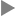 | Play/Pause Particles | , | Particle Editor |
| Restart Particles | / | Particle Editor | |
| Reset View | P |